Справочник по системному программированию · модуль 1 · лабораторная работа
ЛР 2
Программа
в отладчике
Обычный запуск показывает только то, что программа напечатала. Отладчик останавливает программу на нужной строке и показывает, что лежит в каждой переменной, какая функция кого вызвала и в какие команды процессора превратилась строка. В работе маленькая программа на C проходится по шагам в VS Code: точка останова, шаг с обходом и с заходом в функцию, переменные, массив по байтам, стек вызовов и машинный код. Каждый шаг — действие, кадр экрана и объяснение для системы, выбранной переключателем вверху страницы.
- Пара
- 2, первая половина; перед главой 1.1
- Время
- 35–40 минут
- Программы
- VS Code с расширением C/C++, компилятор MSVC и отладчик Visual Studioclang и отладчик LLDBgcc и отладчик GDB
- Сдать
debug.c, папку.vscode,report.mdи 8 снимков вscreenshots/в папкеlabs/02-debuggerрепозиторияsysprog-start
§1Подготовка
Нужны VS Code, расширение C/C++ от Microsoft и компилятор из ЛР 1. Расширение ставится во вкладке Extensions на левой полосе VS Code (Ctrl+Shift+X, на Mac — ⌘+⇧+X): поиск C/C++, кнопка Install. Вместе с ним ставится программа-посредник между VS Code и отладчиком системы. Отладчик для программ MSVC входит в само расширение.Отладчик LLDB входит в Command Line Tools, которые ставились в ЛР 1.Отладчик GDB ставится командой sudo apt install gdb.
Работа лежит в репозитории sysprog-start, в папке labs/02-debugger. Создайте в ней файл debug.c и папку .vscode с двумя файлами настроек. Программа короткая: структура из двух чисел, массив под слово, цикл и функция. Под кодом — его разбор по строкам: кнопками «Дальше» и «Назад» листаются шаги, слева подсвечиваются строки шага.
#include <stdio.h> #include <string.h> struct point { int x; int y; }; int area(struct point p) { int s = p.x * p.y; return s; } int main(void) { struct point p = {3, 4}; char name[8]; int total = 0; strcpy(name, "agent"); for (int i = 1; i <= 3; i++) total += i; int a = area(p); printf("%s: total=%d area=%d\n", name, total, a); return 0; }
Разбор debug.c по шагамвсе системы
Зачем эта программа. Дать отладчику маленькую программу, в которой есть всё, что потом встретится в ядре агента: структура, массив под строку, цикл и вызов функции. Сама программа считает пустяки — сумму 1 + 2 + 3 и площадь прямоугольника 3 × 4; важно не что она считает, а что видно внутри неё под отладчиком.
#include <stdio.h> #include <string.h> struct point { int x; int y; }; int area(struct point p) { int s = p.x * p.y; return s; } int main(void) { struct point p = {3, 4}; char name[8]; int total = 0; strcpy(name, "agent"); for (int i = 1; i <= 3; i++) total += i; int a = area(p); printf("%s: total=%d area=%d\n", name, total, a); return 0; }
- Подключить заголовочные файлы
Строка
#include <…>вставляет в программу объявления из готового файла. Без них компилятор не знает чужих функций.stdio.h— ввод и вывод, здесь радиprintf;string.h— работа со строками, здесь радиstrcpy.
Оглавление справочника: в нём записано, какие функции есть и как их вызывать. Сами функции лежат в библиотеке системы — об этом ЛР 3.
- Описать свой тип — структуру
struct point { … };описывает новый тип данных из двух полей. Памяти под него пока нет: это только чертёж.struct— «составной тип»;point— имя типа, его выбирает программист;int x;иint y;— два поля, целые числа по 4 байта;;после}обязательна: так заканчивается описание типа.
Как такая структура лежит в памяти — два числа подряд:
x4 байтаy4 байтаБланк с двумя графами «ширина» и «высота». Пока это образец бланка, а не заполненный лист.
- Написать функцию area
Функция получает структуру и возвращает её площадь.
int area(…)— функция с именемarea, вернёт целое число;struct point p— параметр: на вход приходит структура, внутри функции она зовётсяp;int s = p.x * p.y;— новая переменнаяs, в неё записывается произведение полей. Точка достаёт поле из структуры;return s;— отдатьsтому, кто вызвал функцию.
Функция получает копию структуры: в шаге 8 отладчик покажет, что у
areaсвоя переменнаяp.Калькулятор площади: в него вписывают ширину и высоту с листка, листок остаётся у вас.
- Начать главную функцию
int main(void) {— функция, с которой система запускает программу на C.int— вернёт код завершения: 0 — без ошибок;(void)— ничего не принимает;{— начало тела, конец —}в строке 25.
Первая страница инструкции: с неё начинают читать, остальные функции — приложения, на которые она ссылается.
- Объявить переменные main
struct point p = {3, 4};— переменная типаpoint, вxзаписывается 3, вy— 4, по порядку полей;char name[8];— массив из 8 ячеек по одному байту под буквы. Значения не заданы;int total = 0;— целое число, сразу 0.
Место под все переменные
mainвыделяется при входе в функцию, ещё до строки 15. Поэтому в шаге 4 отладчик покажет в них случайные числа, а в шаге 5 — уже 3 и 4:3p.x4p.y?name[0…7]0totalЯщики стола выдали вместе со столом. В одни сразу положили бумаги, в других лежит то, что оставил прошлый хозяин.
- Записать слово в массив
strcpy(name, "agent");копирует строку"agent"в массивnameпо одной букве и ставит в конце нулевой байт — знак «строка закончилась».strcpy— «string copy», копировать строку;- первый аргумент — куда, второй — откуда;
- в кавычках 5 букв, в массив записывается 6 байт: буквы и ноль.
a61g67e65n6et74\000strcpyне проверяет, хватит ли места: строку из 20 букв она тоже запишет и испортит память за массивом. Поэтому MSVC выдаёт на неё предупреждение C4996, а в главе 1.1 системные функции получают вместе с буфером его размер —sizeof.Вписать слово в клеточки бланка по одной букве и поставить точку. Сколько клеточек на бланке, ручка не знает.
- Цикл: сложить 1, 2 и 3
for (…)повторяет строку 21 несколько раз. В скобках три части через точку с запятой:int i = 1— счётчик, перед первым проходом 1;i <= 3— условие: покаiне больше 3, повторять;i++— после каждого прохода прибавить кiединицу;total += i;— то же, чтоtotal = total + i;.
Проходы по порядку. В шаге 7 вы увидите их в окне Watch:
проход i i <= 3? total после строки 21 1 1 да 0 + 1 = 1 2 2 да 1 + 2 = 3 3 3 да 3 + 3 = 6 — 4 нет — выход 6 Пересчитать монеты, перекладывая по одной: «одна, ещё две — три, ещё три — шесть».
- Вызвать функцию
int a = area(p);— программа уходит в функциюareaсо структуройp, ждёт её ответа и кладёт его в новую переменнуюa: 3 × 4 = 12.На этой строке в шаге 8 отладчик «зайдёт» в функцию клавишей F11, а в стеке вызовов появится вторая строка:
areaработает сейчас3p.x — копия4p.y — копия?smainждёт на строке 223p.x4p.y6total?aУ
areaсвояp— копия. Когда функция вернёт 12, её строка исчезнет из стопки, а 12 попадёт вaуmain.Стопка папок на столе: сверху та, с которой работают сейчас; под ней та, из-за которой её открыли.
- Напечатать результат
printfпечатает шаблон, подставляя значения вместо знаков%по порядку:%s— строка:name, то естьagent;- первый
%d— целое:total, 6; - второй
%d— целое:a, 12; \n— перевод строки.
Вывод:
agent: total=6 area=12. - Завершить программу
return 0;отдаёт системе код завершения 0 — «без ошибок». Его покажет отладчик в шаге 11: «exited with code 0».
launch.json описывает, какую программу и каким отладчиком запускать. tasks.json — как собрать программу перед запуском. В имени папки .vscode точка в начале обязательна. Под каждым файлом — разбор его строк.
{
"version": "0.2.0",
"configurations": [
{
"name": "debug",
"type": "cppvsdbg",
"request": "launch",
"program": "${workspaceFolder}/debug.exe",
"cwd": "${workspaceFolder}",
"console": "integratedTerminal",
"preLaunchTask": "build"
}
]
}Разбор launch.json по шагамWindows
Зачем эта программа. Сказать VS Code, какую программу и каким отладчиком запускать по клавише F5. Без этого файла VS Code не знает, где лежит собранная программа и какой отладчик к ней подходит.
{
"version": "0.2.0",
"configurations": [
{
"name": "debug",
"type": "cppvsdbg",
"request": "launch",
"program": "${workspaceFolder}/debug.exe",
"cwd": "${workspaceFolder}",
"console": "integratedTerminal",
"preLaunchTask": "build"
}
]
}
- Обёртка файла
Файл записан в формате JSON: фигурные скобки — набор пар
"имя": значение, квадратные — список."version": "0.2.0"— версия формата файла, её читает VS Code;"configurations": [ … ]— список способов запуска. У нас один, но их может быть несколько: тогда в панели Run and Debug появится выбор.
Папка с карточками. Каждая карточка — один способ запустить программу.
- Имя и отладчик
"name": "debug"— подпись у зелёного треугольника в панели Run and Debug;"type"— какой отладчик позвать, о нём ниже;"request": "launch"— запустить программу заново. Есть ещёattach— подключиться к уже работающей, это понадобится позже, со службой агента.
- Отладчик cppvsdbg
cppvsdbg— отладчик Visual Studio, он понимает программы, собранные MSVC, и файлdebug.pdbсо сведениями о строках и переменных. - Какую программу запускать
"program"— путь к собранной программе;${workspaceFolder}— VS Code подставит сюда путь к открытой папке, например…/labs/02-debugger;"cwd"— текущая папка программы: от неё считаются пути к файлам, которые она откроет.
- Куда печатает программа
"console": "integratedTerminal"— выводprintfпойдёт во встроенный терминал VS Code, а не в отдельное чёрное окно. - Сначала собрать
"preLaunchTask": "build"— перед каждым запуском выполнить задачу с меткойbuildизtasks.json. Поменяли код, нажали F5 — отладчик запускает уже новую версию.Перед поездкой — заправка. Водитель не думает о ней каждый раз: она стоит первым пунктом маршрута.
- Закрыть скобки
Скобки закрываются в обратном порядке: карточка, список, весь файл. Лишняя или пропущенная запятая — частая ошибка: VS Code подчеркнёт её красным.
{
"version": "2.0.0",
"tasks": [
{
"label": "build",
"type": "shell",
"command": "cl /nologo /Zi /Od /W4 debug.c",
"group": "build"
}
]
}Разбор tasks.json по шагамWindows
Зачем эта программа. Описать, как собрать debug.c с ключами для отладчика. launch.json вызывает эту задачу перед каждым запуском.
{
"version": "2.0.0",
"tasks": [
{
"label": "build",
"type": "shell",
"command": "cl /nologo /Zi /Od /W4 debug.c",
"group": "build"
}
]
}
- Обёртка файла
Тот же формат JSON, что у
launch.json."tasks": [ … ]— список задач: команд, которые VS Code умеет выполнять сам. - Метка задачи
"label": "build"— имя задачи. По немуlaunch.jsonнаходит её в строкеpreLaunchTask: слова должны совпадать буква в букву.Ярлык на папке. Коллега просит «дай папку build» — и вы находите её по ярлыку.
- Выполнить в терминале
"type": "shell"— выполнить строкуcommandтак, как будто вы набрали её в терминале. Вывод компилятора появится во вкладке Terminal. - Команда сборки
cl— компилятор MSVC;/nologo— без строки с версией компилятора;/Zi— записать сведения для отладчика вdebug.pdb: какая машинная команда относится к какой строке и где лежит каждая переменная;/Od— без оптимизации: команды идут в порядке строк, переменные лежат в памяти;/W4— подробные предупреждения;debug.c— исходник. Имя программы MSVC берёт от него:debug.exe, то самое, что указано в"program"файлаlaunch.json.
Ключи отладки и выключенная оптимизация — главное в этой строке. Без них отладчик остановится не там или покажет «optimized out» вместо значения.
- Задача сборки по умолчанию
"group": "build"— эту же задачу VS Code запустит по команде Terminal → Run Build Task, без отладчика.
{
"version": "0.2.0",
"configurations": [
{
"name": "debug",
"type": "cppdbg",
"request": "launch",
"program": "${workspaceFolder}/debug",
"cwd": "${workspaceFolder}",
"MIMode": "lldb",
"preLaunchTask": "build",
"targetArchitecture": "arm64",
"logging": {
"moduleLoad": false
}
}
]
}Разбор launch.json по шагамmacOS
Зачем эта программа. Сказать VS Code, какую программу и каким отладчиком запускать по клавише F5. Без этого файла VS Code не знает, где лежит собранная программа и какой отладчик к ней подходит.
{
"version": "0.2.0",
"configurations": [
{
"name": "debug",
"type": "cppdbg",
"request": "launch",
"program": "${workspaceFolder}/debug",
"cwd": "${workspaceFolder}",
"MIMode": "lldb",
"preLaunchTask": "build",
"targetArchitecture": "arm64",
"logging": {
"moduleLoad": false
}
}
]
}
- Обёртка файла
Файл записан в формате JSON: фигурные скобки — набор пар
"имя": значение, квадратные — список."version": "0.2.0"— версия формата файла, её читает VS Code;"configurations": [ … ]— список способов запуска. У нас один, но их может быть несколько: тогда в панели Run and Debug появится выбор.
Папка с карточками. Каждая карточка — один способ запустить программу.
- Имя и отладчик
"name": "debug"— подпись у зелёного треугольника в панели Run and Debug;"type"— какой отладчик позвать, о нём ниже;"request": "launch"— запустить программу заново. Есть ещёattach— подключиться к уже работающей, это понадобится позже, со службой агента.
- Отладчик cppdbg
cppdbg— посредник из расширения C/C++. Сам он программу не останавливает, а передаёт команды настоящему отладчику системы. Какому — сказано в строкеMIMode. - Какую программу запускать
"program"— путь к собранной программе;${workspaceFolder}— VS Code подставит сюда путь к открытой папке, например…/labs/02-debugger;"cwd"— текущая папка программы: от неё считаются пути к файлам, которые она откроет.
- Какой отладчик системы
"MIMode": "lldb"— LLDB — отладчик из Command Line Tools.Переводчик на переговорах: VS Code говорит «стоп на строке 15», посредник переводит это на язык отладчика.
- Сначала собрать
"preLaunchTask": "build"— перед каждым запуском выполнить задачу с меткойbuildизtasks.json. Поменяли код, нажали F5 — отладчик запускает уже новую версию.Перед поездкой — заправка. Водитель не думает о ней каждый раз: она стоит первым пунктом маршрута.
- Тип процессора
"targetArchitecture": "arm64"— программа собрана для процессора Apple (M1 и новее). Без этой строки отладчик считает её программой для Intel и не останавливается на точках. На Mac с Intel здесь пишутx86_64. - Меньше служебных строк
"logging": {"moduleLoad": false}— не печатать в Debug Console строку про каждую загруженную библиотеку. Без неё вывод программы теряется среди десятков строк «Loaded …».
{
"version": "2.0.0",
"tasks": [
{
"label": "build",
"type": "shell",
"command": "clang -g -O0 -Wall -Wextra -o debug \"${workspaceFolder}/debug.c\"",
"group": "build"
}
]
}Разбор tasks.json по шагамmacOS
Зачем эта программа. Описать, как собрать debug.c с ключами для отладчика. launch.json вызывает эту задачу перед каждым запуском.
{
"version": "2.0.0",
"tasks": [
{
"label": "build",
"type": "shell",
"command": "clang -g -O0 -Wall -Wextra -o debug \"${workspaceFolder}/debug.c\"",
"group": "build"
}
]
}
- Обёртка файла
Тот же формат JSON, что у
launch.json."tasks": [ … ]— список задач: команд, которые VS Code умеет выполнять сам. - Метка задачи
"label": "build"— имя задачи. По немуlaunch.jsonнаходит её в строкеpreLaunchTask: слова должны совпадать буква в букву.Ярлык на папке. Коллега просит «дай папку build» — и вы находите её по ярлыку.
- Выполнить в терминале
"type": "shell"— выполнить строкуcommandтак, как будто вы набрали её в терминале. Вывод компилятора появится во вкладке Terminal. - Команда сборки
clang— компилятор;-g— добавить сведения для отладчика: какая машинная команда относится к какой строке и где лежит каждая переменная;-O0— без оптимизации: команды идут в порядке строк, переменные лежат в памяти;-Wall -Wextra— подробные предупреждения;-o debug— имя готовой программы, то самое, что указано в"program"файлаlaunch.json;\"${workspaceFolder}/debug.c\"— путь к исходнику. Обратная косая черта перед кавычкой нужна, чтобы кавычка попала в команду, а не закончила строку JSON: так путь с пробелами не разорвётся.
Ключи отладки и выключенная оптимизация — главное в этой строке. Без них отладчик остановится не там или покажет «optimized out» вместо значения.
- Задача сборки по умолчанию
"group": "build"— эту же задачу VS Code запустит по команде Terminal → Run Build Task, без отладчика.
{
"version": "0.2.0",
"configurations": [
{
"name": "debug",
"type": "cppdbg",
"request": "launch",
"program": "${workspaceFolder}/debug",
"cwd": "${workspaceFolder}",
"MIMode": "gdb",
"preLaunchTask": "build",
"logging": {
"moduleLoad": false
}
}
]
}Разбор launch.json по шагамLinux
Зачем эта программа. Сказать VS Code, какую программу и каким отладчиком запускать по клавише F5. Без этого файла VS Code не знает, где лежит собранная программа и какой отладчик к ней подходит.
{
"version": "0.2.0",
"configurations": [
{
"name": "debug",
"type": "cppdbg",
"request": "launch",
"program": "${workspaceFolder}/debug",
"cwd": "${workspaceFolder}",
"MIMode": "gdb",
"preLaunchTask": "build",
"logging": {
"moduleLoad": false
}
}
]
}
- Обёртка файла
Файл записан в формате JSON: фигурные скобки — набор пар
"имя": значение, квадратные — список."version": "0.2.0"— версия формата файла, её читает VS Code;"configurations": [ … ]— список способов запуска. У нас один, но их может быть несколько: тогда в панели Run and Debug появится выбор.
Папка с карточками. Каждая карточка — один способ запустить программу.
- Имя и отладчик
"name": "debug"— подпись у зелёного треугольника в панели Run and Debug;"type"— какой отладчик позвать, о нём ниже;"request": "launch"— запустить программу заново. Есть ещёattach— подключиться к уже работающей, это понадобится позже, со службой агента.
- Отладчик cppdbg
cppdbg— посредник из расширения C/C++. Сам он программу не останавливает, а передаёт команды настоящему отладчику системы. Какому — сказано в строкеMIMode. - Какую программу запускать
"program"— путь к собранной программе;${workspaceFolder}— VS Code подставит сюда путь к открытой папке, например…/labs/02-debugger;"cwd"— текущая папка программы: от неё считаются пути к файлам, которые она откроет.
- Какой отладчик системы
"MIMode": "gdb"— GDB — отладчик, который ставится командойsudo apt install gdb.Переводчик на переговорах: VS Code говорит «стоп на строке 15», посредник переводит это на язык отладчика.
- Сначала собрать
"preLaunchTask": "build"— перед каждым запуском выполнить задачу с меткойbuildизtasks.json. Поменяли код, нажали F5 — отладчик запускает уже новую версию.Перед поездкой — заправка. Водитель не думает о ней каждый раз: она стоит первым пунктом маршрута.
- Меньше служебных строк
"logging": {"moduleLoad": false}— не печатать в Debug Console строку про каждую загруженную библиотеку. Без неё вывод программы теряется среди десятков строк «Loaded …».
{
"version": "2.0.0",
"tasks": [
{
"label": "build",
"type": "shell",
"command": "gcc -g -O0 -Wall -Wextra -o debug \"${workspaceFolder}/debug.c\"",
"group": "build"
}
]
}Разбор tasks.json по шагамLinux
Зачем эта программа. Описать, как собрать debug.c с ключами для отладчика. launch.json вызывает эту задачу перед каждым запуском.
{
"version": "2.0.0",
"tasks": [
{
"label": "build",
"type": "shell",
"command": "gcc -g -O0 -Wall -Wextra -o debug \"${workspaceFolder}/debug.c\"",
"group": "build"
}
]
}
- Обёртка файла
Тот же формат JSON, что у
launch.json."tasks": [ … ]— список задач: команд, которые VS Code умеет выполнять сам. - Метка задачи
"label": "build"— имя задачи. По немуlaunch.jsonнаходит её в строкеpreLaunchTask: слова должны совпадать буква в букву.Ярлык на папке. Коллега просит «дай папку build» — и вы находите её по ярлыку.
- Выполнить в терминале
"type": "shell"— выполнить строкуcommandтак, как будто вы набрали её в терминале. Вывод компилятора появится во вкладке Terminal. - Команда сборки
gcc— компилятор;-g— добавить сведения для отладчика: какая машинная команда относится к какой строке и где лежит каждая переменная;-O0— без оптимизации: команды идут в порядке строк, переменные лежат в памяти;-Wall -Wextra— подробные предупреждения;-o debug— имя готовой программы, то самое, что указано в"program"файлаlaunch.json;\"${workspaceFolder}/debug.c\"— путь к исходнику. Обратная косая черта перед кавычкой нужна, чтобы кавычка попала в команду, а не закончила строку JSON: так путь с пробелами не разорвётся.
Ключи отладки и выключенная оптимизация — главное в этой строке. Без них отладчик остановится не там или покажет «optimized out» вместо значения.
- Задача сборки по умолчанию
"group": "build"— эту же задачу VS Code запустит по команде Terminal → Run Build Task, без отладчика.
Компилятор cl находится, только если VS Code запущен из x64 Native Tools Command Prompt: перейдите в папку работы и выполните code .. Из меню «Пуск» VS Code не знает, где лежит компилятор, и задача build завершится ошибкой «cl не является внутренней или внешней командой».
Вверху шага — действие. Ниже — кадр экрана после действия; красные рамки отмечают места, о которых идёт речь, номера рамок повторяются в тексте. Слева под кадром — что на нём видно, справа — что изменилось по сравнению с прошлым шагом. Строка «В отчёт» — что записать в report.md. Случайные числа в переменных у вас будут другими.
§2Словарь отладчика
Отладчик — программа, которая запускает другую программу и управляет ею: останавливает, выполняет по одной строке и читает её память. Сама программа об этом не знает. Ниже — слова, которые встретятся в шагах. Справа — сравнение: программа как здание с коридором и кабинетами-функциями.
| Слово | Что делает | Сравнение |
|---|---|---|
Точка остановаbreakpoint | красная точка у строки: программа остановится перед этой строкой | закладка в книге с надписью «стоп, читать отсюда» |
Шаг с обходомStep Over, F10 | выполнить текущую строку целиком, даже если в ней вызов функции | пройти по коридору мимо двери кабинета |
Шаг с заходомStep Into, F11 | если в строке вызов функции — войти в неё и встать на её первую строку | открыть дверь и зайти в кабинет |
Выход из функцииStep Out, Shift+F11 | доработать текущую функцию и встать в месте, откуда её вызвали | выйти из кабинета обратно в коридор |
ПродолжитьContinue, F5 | работать без остановок до следующей точки или до конца | читать дальше до следующей закладки |
ПеременныеVariables | все переменные текущей функции и их значения сейчас | содержимое ящиков стола в этом кабинете |
НаблюдениеWatch | выражения, которые вы выбрали сами; пересчитываются на каждом шаге | табло, на которое вывели два-три важных числа |
Стек вызововCall Stack | цепочка функций: кто кого вызвал; сверху та, что работает сейчас | стопка папок на столе: верхнюю дочитать, под ней та, из-за которой её открыли |
Машинный кодDisassembly | команды процессора, в которые компилятор превратил строки C | та же инструкция, переведённая на язык станка |
§3Часть 1. Запуск и остановка
В первой части программа запускается обычным способом, затем под отладчиком: останавливается на строке 15 и проходится по строкам до цикла.
-
Соберите и запустите программу без отладчикаОткройте папку
02-debuggerв VS Code командойcode .из x64 Native Tools Command Prompt. Откройте встроенный терминал (Terminal → New Terminal). Если в нём PowerShell, выберите справа от + стрелку и пункт Command Prompt. Выполнитеcl /nologo /Zi /Od /W4 debug.c && debug.exe.Соберите и запустите программу без отладчикаОткройте папку02-debuggerв VS Code (File → Open Folder), затем встроенный терминал: Terminal → New Terminal. Выполнитеclang -g -O0 -Wall -Wextra -o debug debug.c && ./debug.Соберите и запустите программу без отладчикаОткройте папку02-debuggerв VS Code (File → Open Folder), затем встроенный терминал: Terminal → New Terminal. Выполнитеgcc -g -O0 -Wall -Wextra -o debug debug.c && ./debug.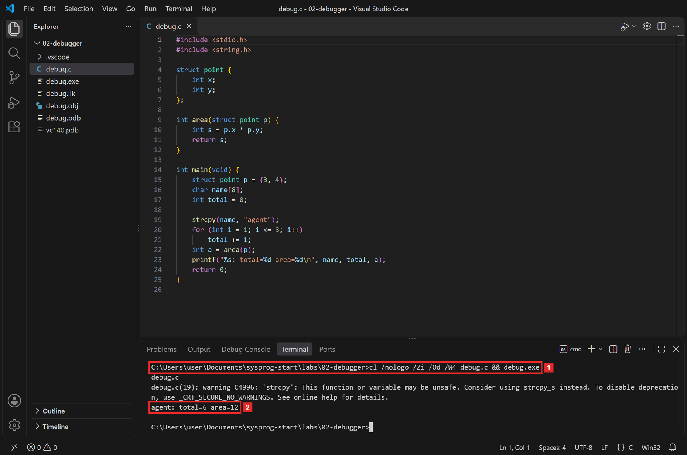
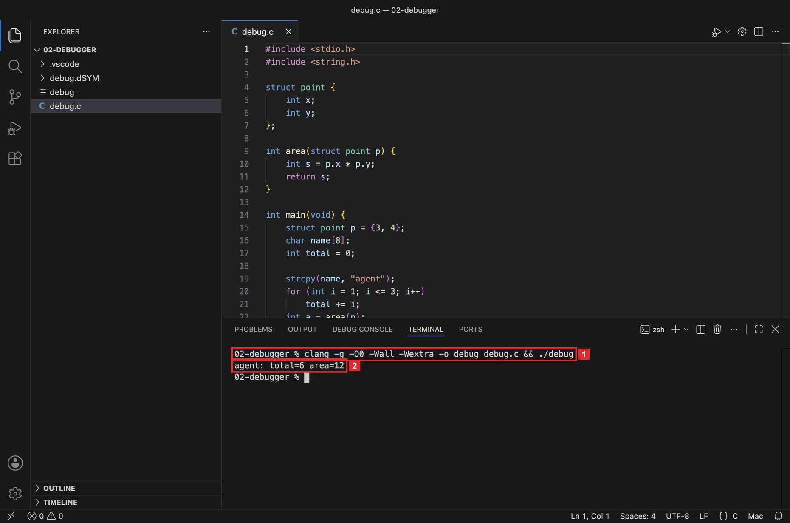
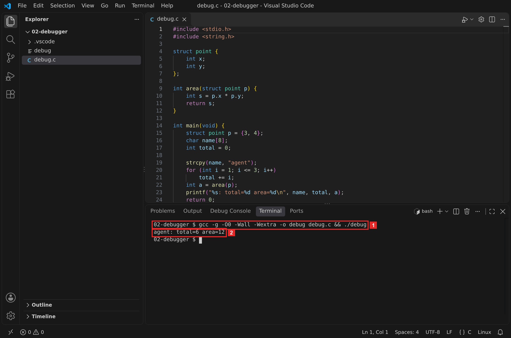
Что на кадре1 — команда сборки и запуска. Ниже компилятор вывел имя файла и предупреждение C4996 для строки 19: функция
strcpy«может быть небезопасна». 2 — вывод программы:agent: total=6 area=12.Что изменилосьПрограмма отработала целиком за долю секунды и напечатала одну строку. Что происходило внутри, по выводу не видно. Ключ
/Ziзаписал рядом файлdebug.pdbсо сведениями для отладчика: какая машинная команда относится к какой строке кода и где лежит каждая переменная. Ключ/Odвыключил оптимизацию. Предупреждение C4996 MSVC выдаёт наstrcpy, потому что она не проверяет размер буфера: в главе 1.1, шаг 3, показано, что бывает при записи за его границу. Программа собрана, предупреждение работу не останавливает.Что на кадре1 — команда сборки и запуска. 2 — вывод программы:
agent: total=6 area=12.Что изменилосьПрограмма отработала целиком за долю секунды и напечатала одну строку. Что происходило внутри, по выводу не видно. Ключ
-gдобавил сведения для отладчика: какая машинная команда относится к какой строке кода и где лежит каждая переменная. В macOS они лежат в папкеdebug.dSYMрядом с программой. Ключ-O0выключил оптимизацию, чтобы порядок команд совпадал с порядком строк.Что на кадре1 — команда сборки и запуска. 2 — вывод программы:
agent: total=6 area=12.Что изменилосьПрограмма отработала целиком за долю секунды и напечатала одну строку. Что происходило внутри, по выводу не видно. Ключ
-gдобавил в файлdebugсведения для отладчика: какая машинная команда относится к какой строке кода и где лежит каждая переменная. Ключ-O0выключил оптимизацию, чтобы порядок команд совпадал с порядком строк.В отчёт. строку, которую напечатала программа.
Снимок в отчёт · 01 Сохраните окно как
screenshots/01_build_run.png. На снимке должно быть видно: команда сборки и строкаagent: total=6 area=12. -
Откройте настройки запускаВ панели Explorer раскройте папку
.vscodeи откройтеlaunch.json. Файлыlaunch.jsonиtasks.jsonвы создали в §1 «Подготовка».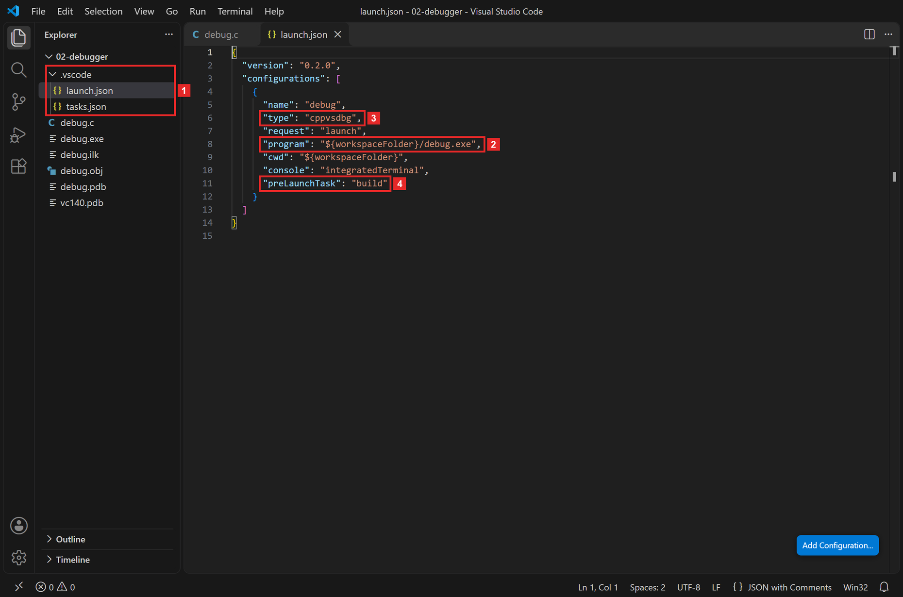
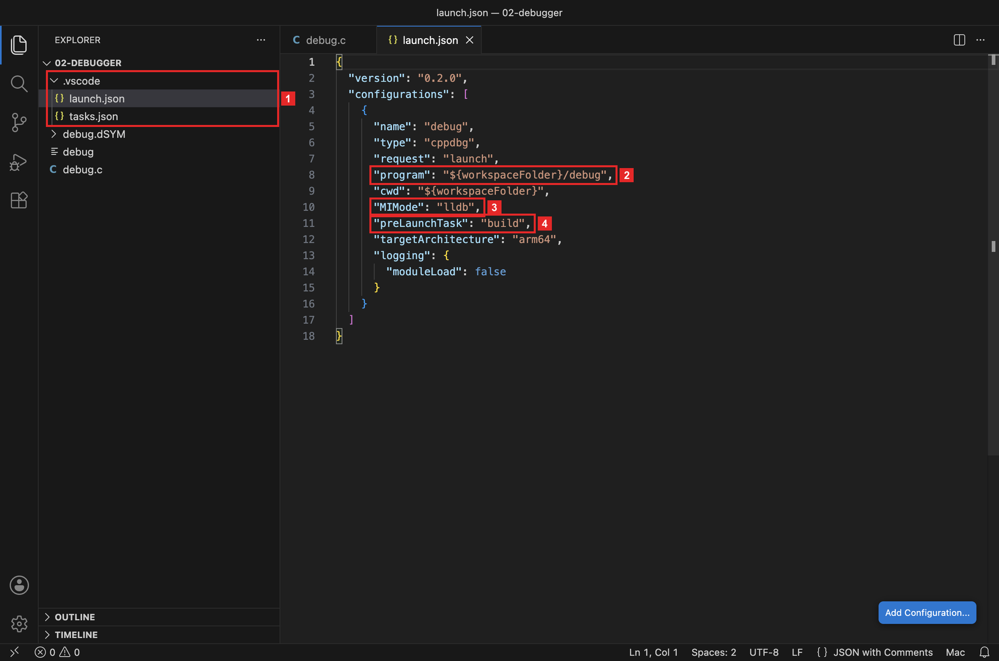
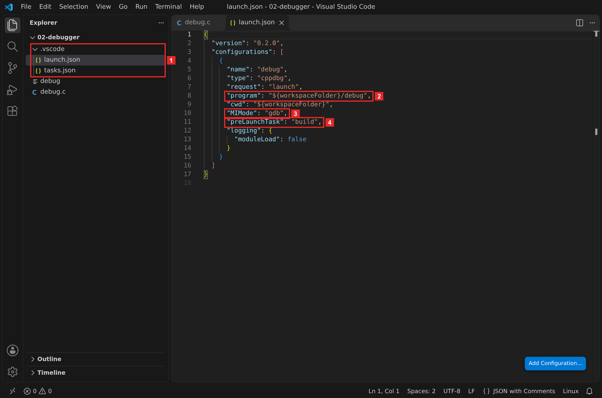
Что на кадре1 — папка настроек VS Code с двумя файлами. 2 — какую программу запускать:
debug.exeв папке проекта. 3 —"type": "cppvsdbg", отладчик Visual Studio для программ MSVC. 4 — перед запуском выполнить задачуbuildизtasks.json, то есть собрать программу заново.Что изменилосьНичего не запустилось: файл только описывает, как запускать отладку. В Explorer видны файлы сборки из шага 1:
debug.exe,debug.obj,debug.pdb,debug.ilkиvc140.pdb. Строка"console": "integratedTerminal"— программа будет печатать во встроенный терминал VS Code.Что на кадре1 — папка настроек VS Code с двумя файлами. 2 — какую программу запускать:
debugв папке проекта. 3 —"MIMode": "lldb", отладчик LLDB из Command Line Tools. 4 — перед запуском выполнить задачуbuildизtasks.json, то есть собрать программу заново.Что изменилосьНичего не запустилось: файл только описывает, как запускать отладку. Строка
"targetArchitecture": "arm64"нужна на Mac с процессором Apple: без неё отладчик считает программу программой для Intel и не останавливается. На Mac с Intel в ней пишутx86_64.Что на кадре1 — папка настроек VS Code с двумя файлами. 2 — какую программу запускать:
debugв папке проекта. 3 —"MIMode": "gdb", отладчик GDB. 4 — перед запуском выполнить задачуbuildизtasks.json, то есть собрать программу заново.Что изменилосьНичего не запустилось: файл только описывает, как запускать отладку. Кнопка запуска отладчика прочитает его.
-
Поставьте точку останова на строке 15Откройте
debug.cи щёлкните слева от номера строки 15 —struct point p = {3, 4};. Появится красная точка. Затем откройте панель Run and Debug на левой полосе (значок треугольника с жуком) или нажмите Ctrl+Shift+D (на Mac — ⌘+⇧+D).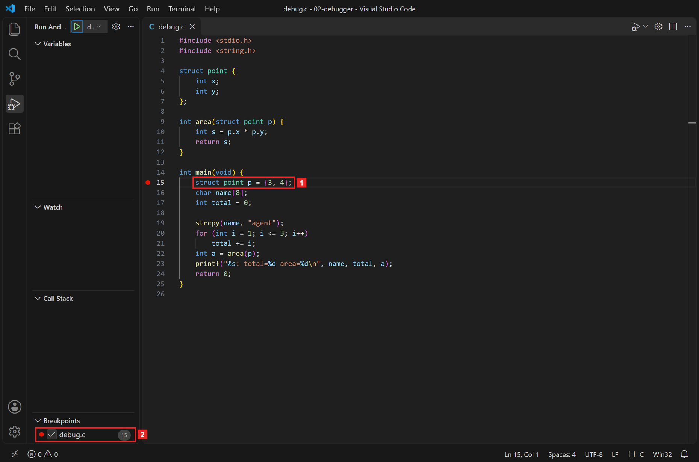
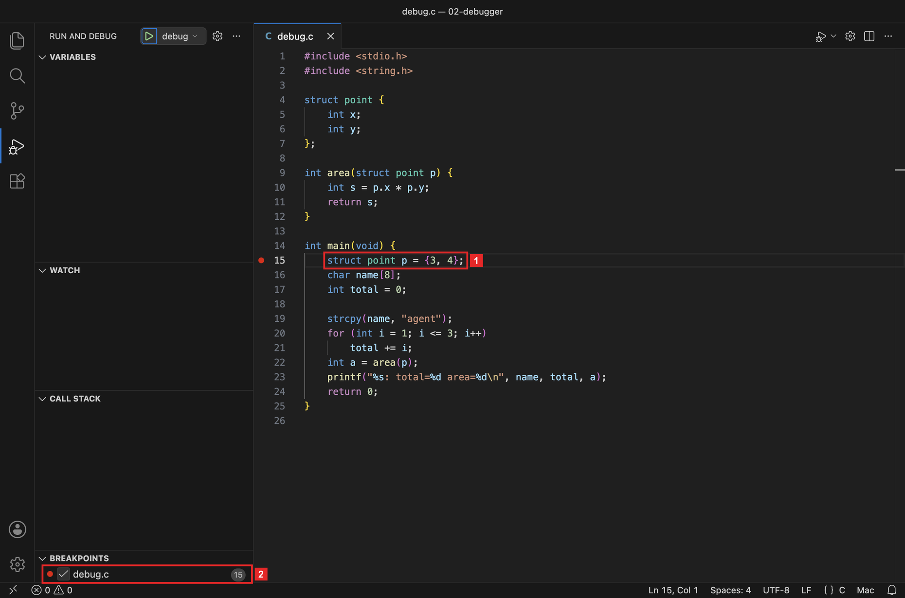
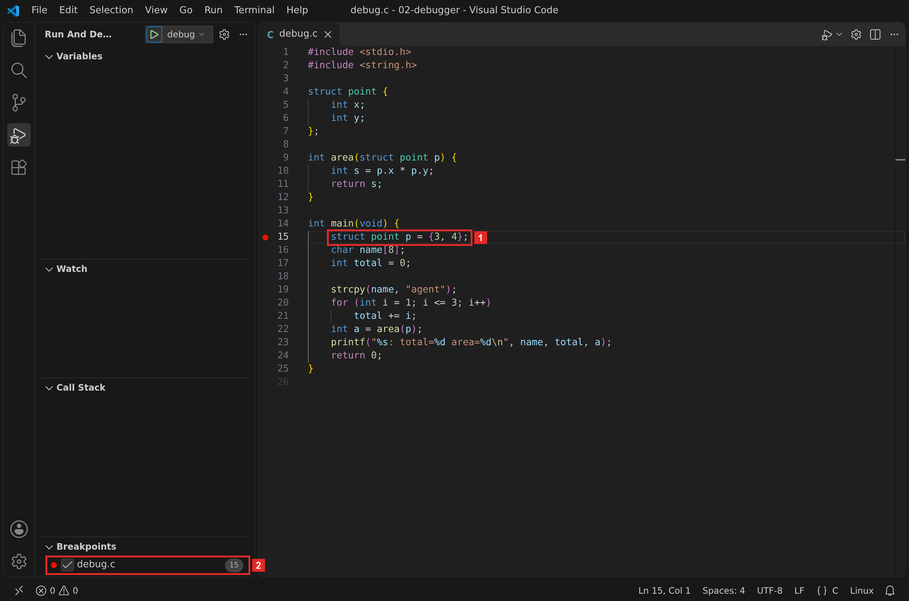
Что на кадре1 — строка 15 с красной точкой слева. 2 — та же точка в списке Breakpoints: файл
debug.c, строка 15. Остальные разделы панели — Variables, Watch, Call Stack — пустые: программа ещё не запущена.Что изменилосьПрограмма не изменилась, точка хранится в настройках VS Code. Когда программа под отладчиком дойдёт до строки 15, отладчик остановит её перед выполнением этой строки.
В отчёт. номер строки, на которой стоит точка останова.
Снимок в отчёт · 02 Сохраните окно как
screenshots/02_breakpoint.png. На снимке должно быть видно: красная точка у строки 15 и она же в списке Breakpoints. -
Запустите отладкуНажмите F5 или зелёный треугольник debug вверху панели Run and Debug. Дождитесь, пока строка 15 подсветится жёлтым. В разделе Variables раскройте Locals и
p.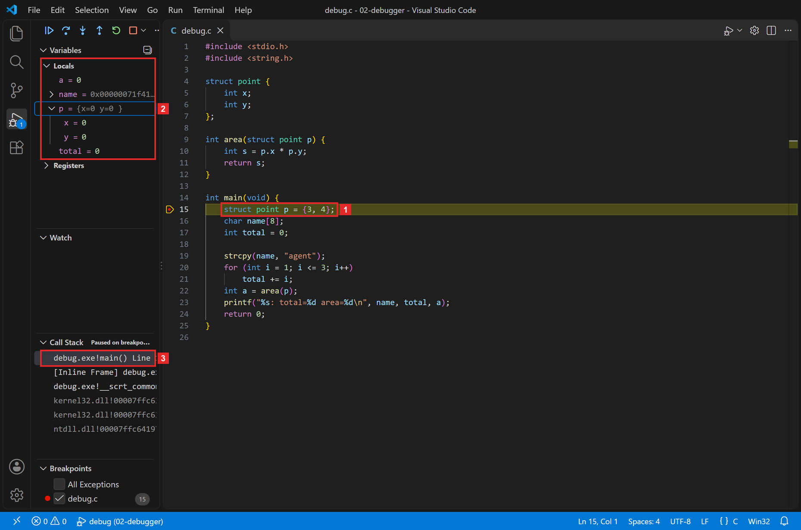
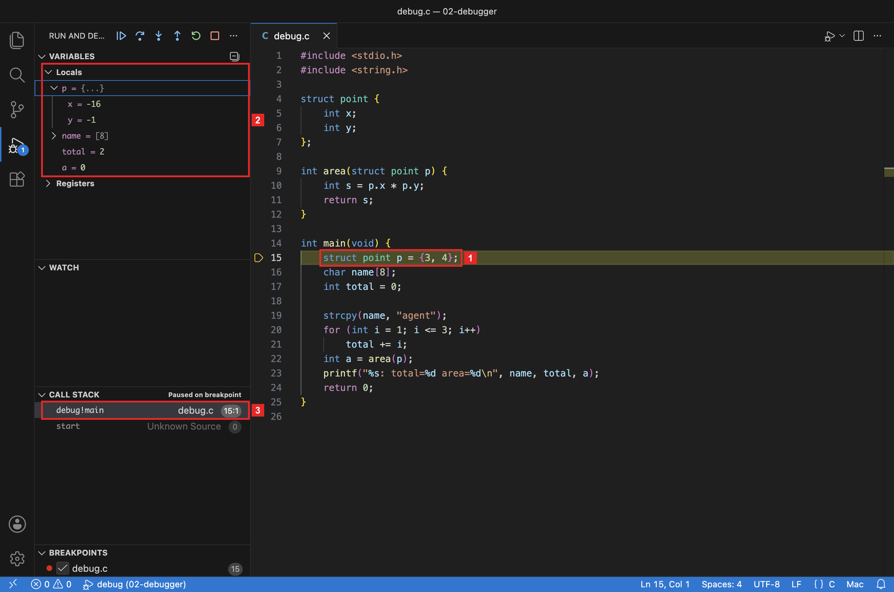
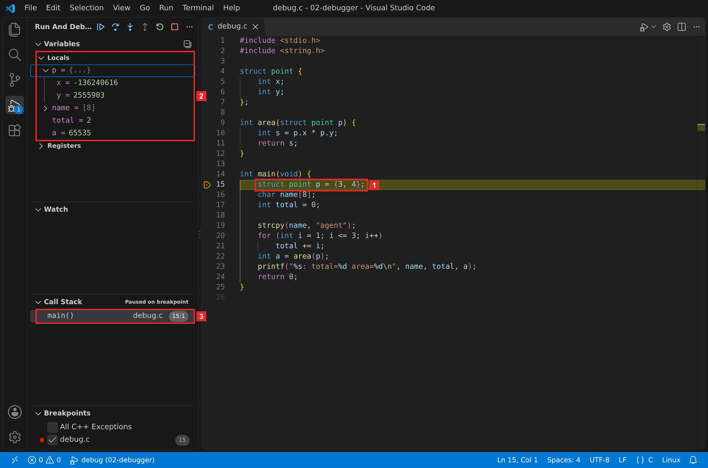
Что на кадре1 — жёлтая стрелка у строки 15: программа стоит перед ней. 2 — локальные переменные
main, по алфавиту:a = 0, массивname(справа его адрес),pс полямиx = 0иy = 0,total = 0. 3 — стек вызовов:debug.exe!main(), строка 15.Что изменилосьПрограмма запущена и стоит. Все переменные
mainуже существуют, но строки, которые их заполняют, ещё не выполнены. В них лежит то, что осталось в этой памяти: в этот раз нули, при другом запуске или на другом компьютере могут быть случайные числа. Подmainв стеке — функции, которые её запустили: служебный код MSVC__scrt_common_mainи функции Windows изkernel32.dllиntdll.dll. Строка состояния внизу стала синей: идёт отладка.Что на кадре1 — жёлтая стрелка у строки 15: программа стоит перед ней. 2 — локальные переменные
main:pс полямиx = -16иy = -1, массивname,total = 2,a = 0. 3 — стек вызовов:debug!main, файлdebug.c, строка 15.Что изменилосьПрограмма запущена и стоит. Все переменные
mainуже существуют, но строки, которые их заполняют, ещё не выполнены. В них лежат случайные числа — то, что осталось в этой памяти от прошлой работы:x = -16,total = 2. При следующем запуске числа могут быть другими. Внизу экрана строка состояния стала синей: идёт отладка.Что на кадре1 — жёлтая стрелка у строки 15: программа стоит перед ней. 2 — локальные переменные
main:pс полямиx = -136240616иy = 2555903, массивname,total = 2,a = 65535. 3 — стек вызовов:main(), файлdebug.c, строка 15.Что изменилосьПрограмма запущена и стоит. Все переменные
mainуже существуют, но строки, которые их заполняют, ещё не выполнены. В них лежат случайные числа — то, что осталось в этой памяти от прошлой работы:x = -136240616,a = 65535. При следующем запуске числа могут быть другими. Внизу экрана строка состояния стала синей: идёт отладка.В отчёт. значения
p.x,p.yиtotalдо выполнения строки 15.Снимок в отчёт · 03 Сохраните окно как
screenshots/03_paused.png. На снимке должно быть видно: жёлтая стрелка у строки 15, переменные в Variables до присваивания. -
Выполните строку 15Нажмите F10 — Step Over, шаг с обходом. Это вторая кнопка на панели отладки, стрелка дугой.
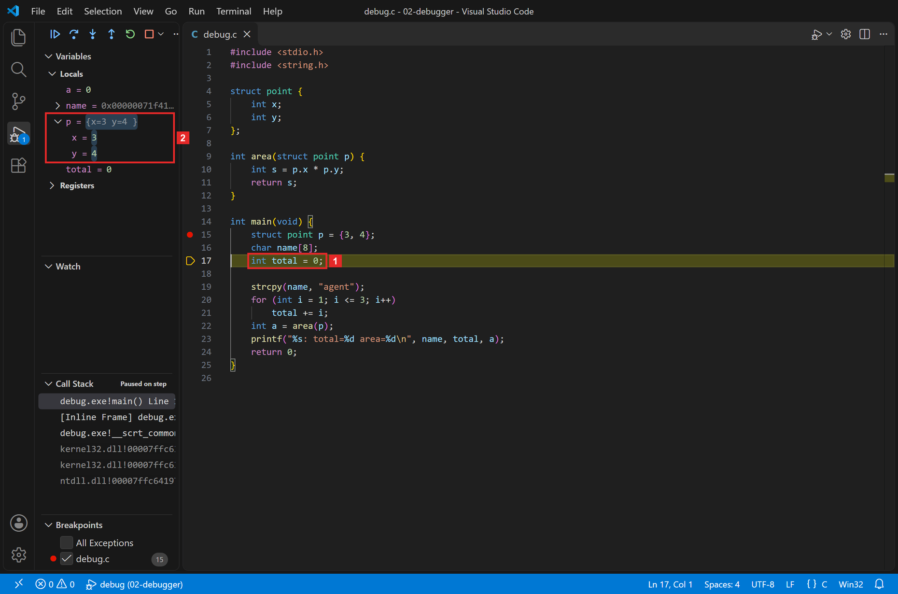
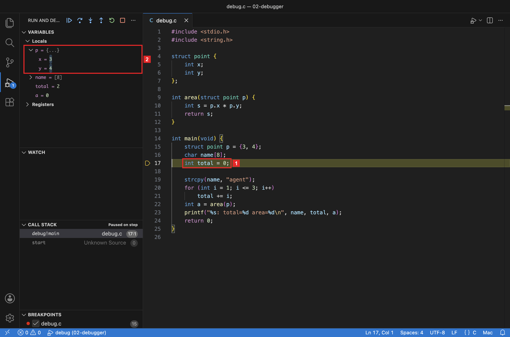
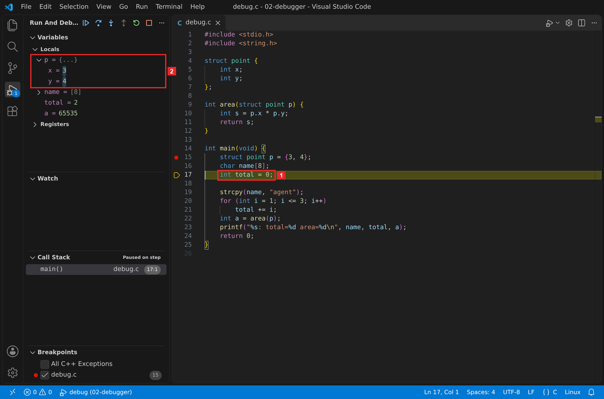
Что на кадре1 — стрелка теперь у строки 17
int total = 0;. 2 — поляp:x = 3,y = 4.Что изменилосьСтрока 15 выполнилась: в
pзаписаны 3 и 4. Строку 16 отладчик пропустил:char name[8];только объявляет массив, машинных команд для неё нет.totalпока прежний: строка 17 ещё не выполнена.В отчёт. значения
p.xиp.yпосле шага. -
Пройдите строки 17 и 19, раскройте массив nameНажмите F10 ещё два раза: стрелка встанет у строки 20. В Variables сверните
pи раскройтеname.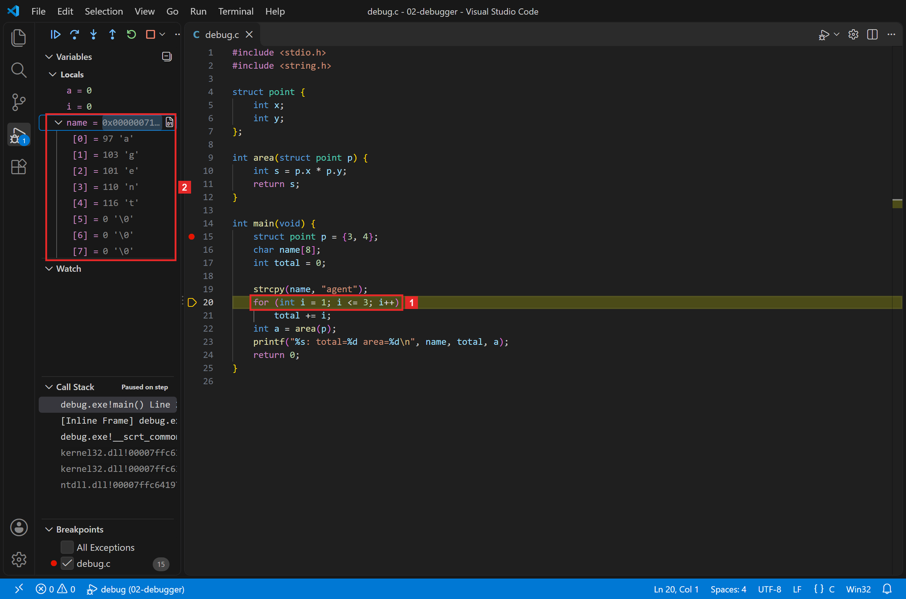
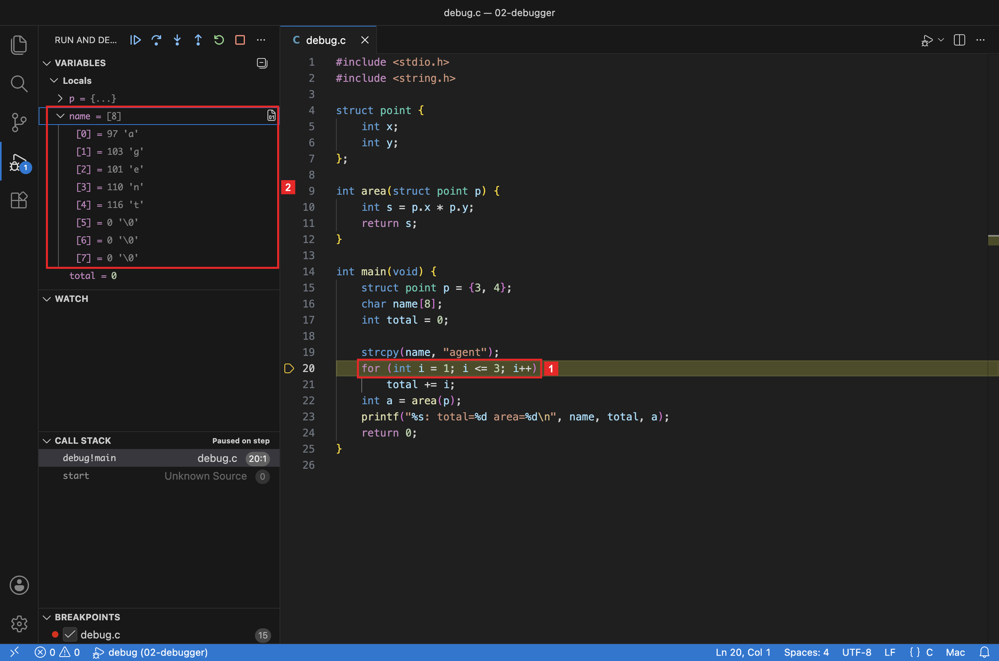
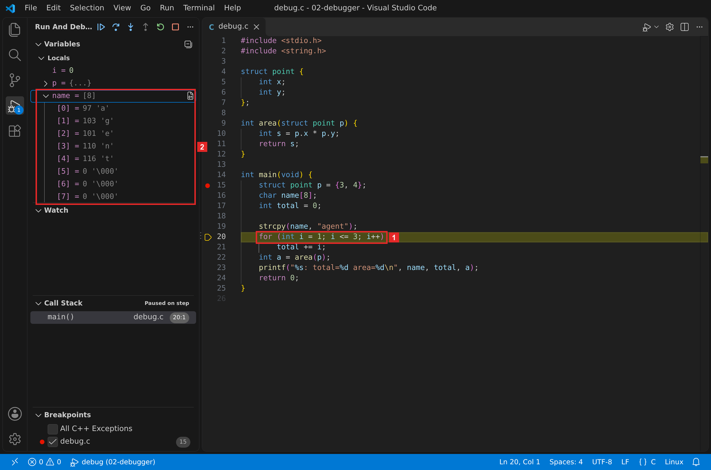
Что на кадре1 — стрелка у строки 20
for. 2 — массивnameпо ячейкам:[0] = 97 'a',[1] = 103 'g',[2] = 101 'e',[3] = 110 'n',[4] = 116 't',[5]–[7]—0 '\0'. Выше — переменная циклаi = 0.Что изменилосьСтрока 17 записала 0 в
total. Строка 19 — функцияstrcpy— записала в массив пять букв и завершающий ноль в[5]. Отладчик показывает каждую ячейку дважды: числом и буквой. 97 — код буквыa. Ячейки[6]и[7]strcpyне трогает: в них осталось то, что было. Переменная циклаiуже видна, но цикл ещё не начался.Что на кадре1 — стрелка у строки 20
for. 2 — массивnameпо ячейкам:[0] = 97 'a',[1] = 103 'g',[2] = 101 'e',[3] = 110 'n',[4] = 116 't',[5]–[7]—0 '\0'. Ниже —total = 0.Что изменилосьСтрока 17 записала 0 в
total. Строка 19 — функцияstrcpy— записала в массив пять букв и завершающий ноль в[5]. Отладчик показывает каждую ячейку дважды: числом и буквой. 97 — код буквыa. Ячейки[6]и[7]strcpyне трогает: в этот раз в них оказались нули.Что на кадре1 — стрелка у строки 20
for. 2 — массивnameпо ячейкам:[0] = 97 'a'…[4] = 116 't',[5]–[7]—0 '\000'. Выше — переменная циклаi = 0.Что изменилосьСтрока 17 записала 0 в
total. Строка 19 — функцияstrcpy— записала в массив пять букв и завершающий ноль в[5]. Отладчик показывает каждую ячейку дважды: числом и буквой. 97 — код буквыa,'\000'— так GDB пишет нулевой байт. Переменная циклаiуже видна, но цикл ещё не начался: в ней случайный 0.В отчёт. код буквы в ячейке
name[0]и в какой ячейке стоит завершающий ноль.Снимок в отчёт · 04 Сохраните окно как
screenshots/04_array_name.png. На снимке должно быть видно: раскрытыйname: буквыagentи ноль в[5]. -
Следите за циклом в WatchВ разделе Watch нажмите + (Add Expression), введите
iи нажмите Enter. Так же добавьтеtotal. Нажмите F10 три раза.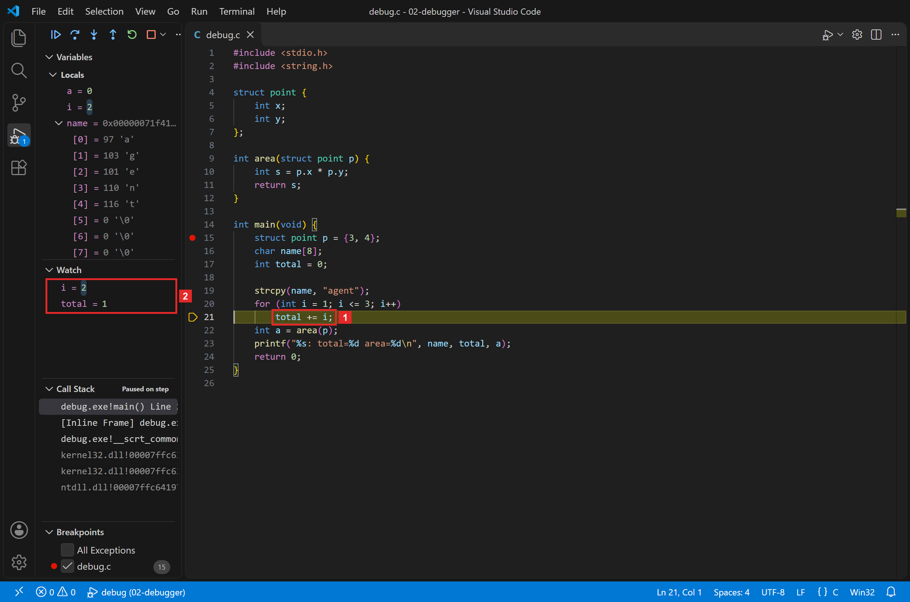
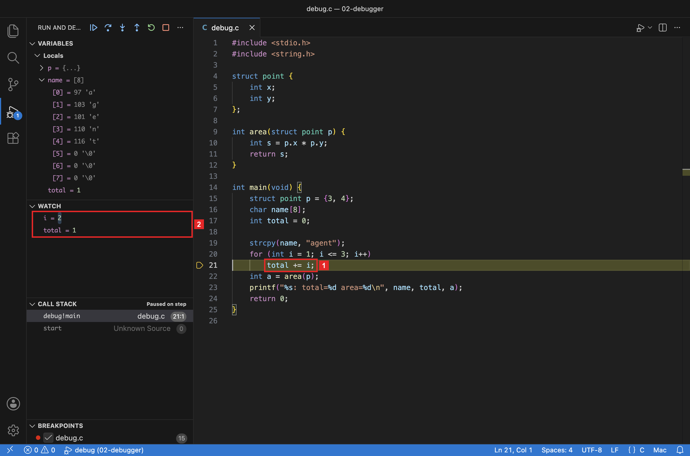
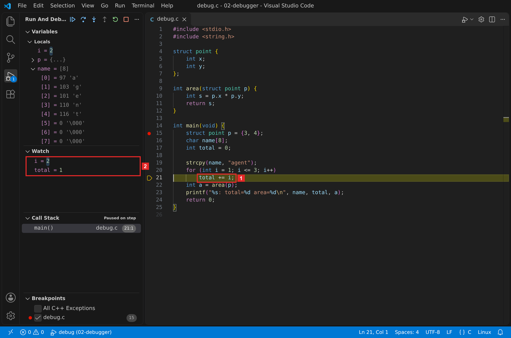
Что на кадре1 — стрелка у строки 21
total += i;. 2 — Watch:i = 2,total = 1.Что изменилосьСтрелка прошла строки 20 → 21 → 20 → 21: цикл идёт второй раз. На первом проходе
totalстал 1. Сейчасi = 2, и строка 21 ещё не выполнена — после неёtotalстанет 3. В Watch можно вписать любое выражение на C, напримерtotal * 2илиname[1].В отчёт. значения
iиtotalна кадре и каким станетtotalпосле следующего шага.Снимок в отчёт · 05 Сохраните окно как
screenshots/05_watch_loop.png. На снимке должно быть видно:iиtotalв разделе Watch на втором проходе цикла.
§4Часть 2. Функция и машинный код
Во второй части отладчик заходит в функцию area, показывает стек вызовов и машинные команды одной строки, затем доводит программу до конца.
-
Зайдите в функцию areaНажимайте F10, пока стрелка не встанет у строки 22
int a = area(p);. В Watch нажмите Remove All Expressions. Затем нажмите F11 — Step Into, шаг с заходом: стрелка вниз на панели отладки. В Windows отладчик сначала встаёт на строку 9 с именем функции — нажмите F10 ещё раз, чтобы перейти на строку 10.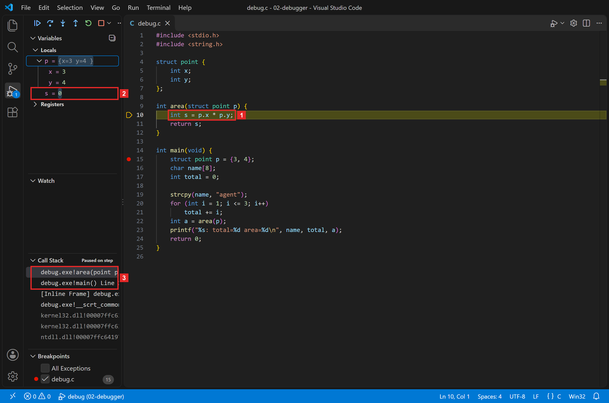
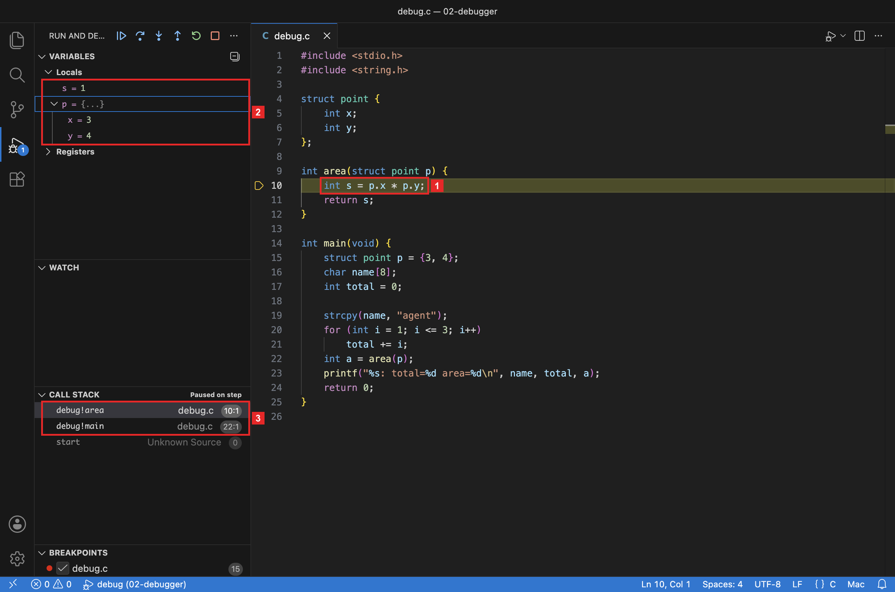
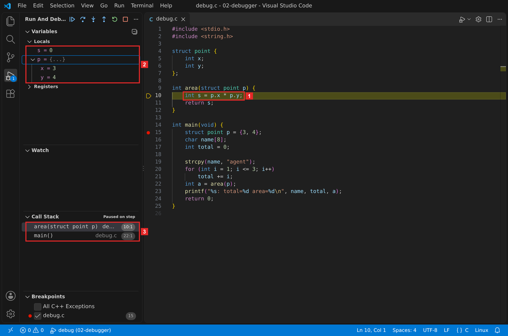
Что на кадре1 — стрелка у строки 10 в функции
area. 2 — переменныеarea:pс полямиx = 3,y = 4иs = 0. 3 — стек вызовов:debug.exe!area(point p)сверху,debug.exe!main()на строке 22 под ней.Что изменилосьОтладчик вошёл в функцию. В Variables теперь переменные
area.pздесь — копия структуры изmain: в C структура передаётся в функцию по значению.sещё не вычислена, строка 10 не выполнена. Стек показывает, кто кого вызвал:mainна строке 22 вызвалаarea. На строке 9 стек был таким же, ноpещё не была заполнена: код входа в функцию копирует аргументы до первой строки тела.Что на кадре1 — стрелка у строки 10 в функции
area. 2 — переменныеarea:s = 1иpс полямиx = 3,y = 4. 3 — стек вызовов:debug!areaна строке 10 сверху,debug!mainна строке 22 под ней.Что изменилосьОтладчик вошёл в функцию. В Variables теперь переменные
area.pздесь — копия структуры изmain: в C структура передаётся в функцию по значению.s = 1— случайное число, строка 10 ещё не выполнена. Стек показывает, кто кого вызвал:mainна строке 22 вызвалаarea.Что на кадре1 — стрелка у строки 10 в функции
area. 2 — переменныеarea:s = 0иpс полямиx = 3,y = 4. 3 — стек вызовов:area(struct point p)на строке 10 сверху,main()на строке 22 под ней.Что изменилосьОтладчик вошёл в функцию. В Variables теперь переменные
area.pздесь — копия структуры изmain: в C структура передаётся в функцию по значению.s = 0— случайное число, строка 10 ещё не выполнена. Стек показывает, кто кого вызвал:mainна строке 22 вызвалаarea.В отчёт. сколько строк в стеке вызовов и какая функция сверху.
Снимок в отчёт · 06 Сохраните окно как
screenshots/06_call_stack.png. На снимке должно быть видно: стрелка вarea, копияpв Variables, две строки в Call Stack. -
Посмотрите машинный код строки 10Щёлкните правой кнопкой по строке 10 и выберите Open Disassembly View.
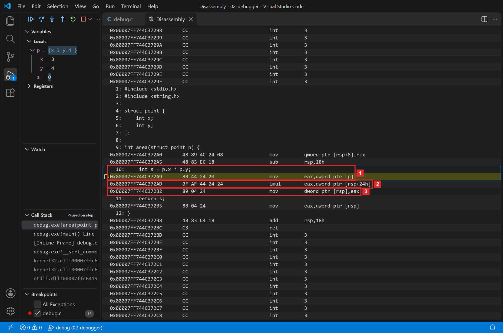
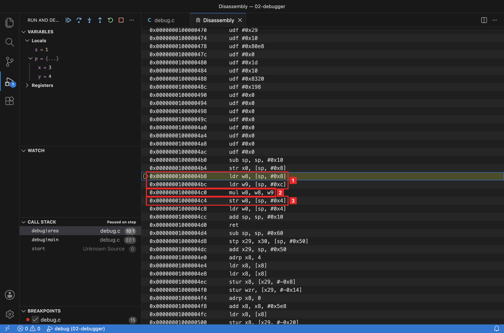
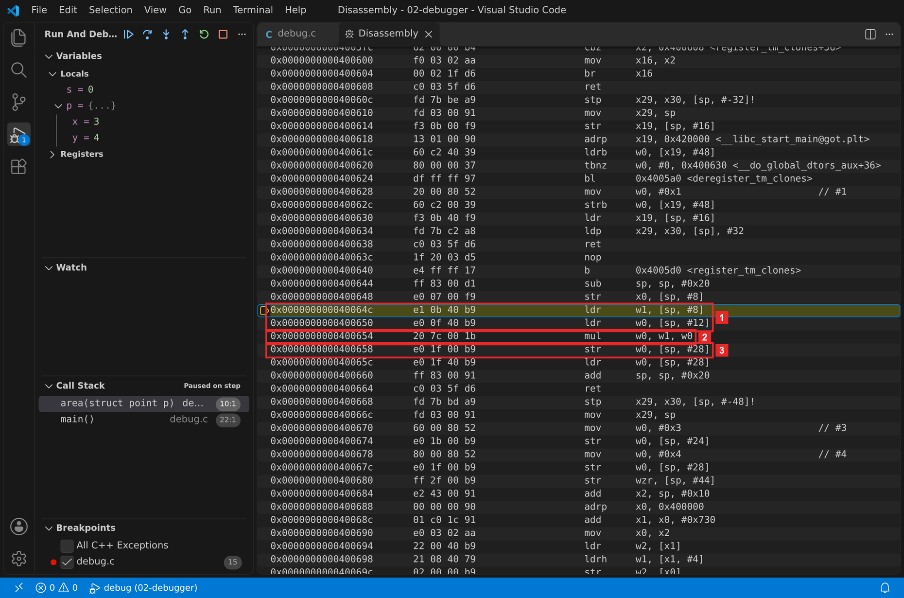
Что на кадреВкладка Disassembly: строки C вперемешку с командами процессора x64, у каждой команды — адрес, байты и текст. 1 — строка 10 и команда
mov eax, dword ptr [p]: взятьp.xв регистрeax. 2 —imul eax, dword ptr [rsp+24h]: умножитьeaxнаp.yпрямо из памяти. 3 —mov dword ptr [rsp], eax: записать результат вs.Что изменилосьОдна строка C стала тремя машинными командами. Результат умножения процессор держит в регистре
eax— ячейке внутри процессора — и потом кладёт в память. Команды x64 разной длины: 4, 5 и 3 байта. СтрокиCC int 3выше и ниже — заполнитель между функциями. Кадр снят на компьютере с процессором ARM: программа собрана для x64 и выполняется через эмулятор, поэтому команды те же, что на компьютере с Intel или AMD.Что на кадреВкладка Disassembly: слева адрес команды в памяти, справа сама команда процессора ARM64. 1 —
ldr w8, [sp, #0x8]иldr w9, [sp, #0xc]: взять из памятиp.xиp.yв регистрыw8иw9. 2 —mul w8, w8, w9: умножить. 3 —str w8, [sp, #0x4]: записать результат вs.Что изменилосьОдна строка C стала четырьмя машинными командами. Процессор не умеет умножать числа прямо в памяти: сначала он берёт их в регистры — ячейки внутри процессора, — умножает и кладёт результат обратно.
sp— адрес места функции в стеке,#0x8— смещение поля от него. Сверху видны строкиudf #0x0: это байты, которые не являются командами, отладчик показывает их как есть.Что на кадреВкладка Disassembly: адрес команды, её байты в шестнадцатеричном виде и сама команда процессора ARM64. 1 —
ldr w1, [sp, #8]иldr w0, [sp, #12]: взять из памятиp.xиp.yв регистры. 2 —mul w0, w1, w0: умножить. 3 —str w0, [sp, #28]: записать результат вs.Что изменилосьОдна строка C стала четырьмя машинными командами. Процессор не умеет умножать числа прямо в памяти: сначала он берёт их в регистры — ячейки внутри процессора, — умножает и кладёт результат обратно. Каждая команда ARM64 занимает 4 байта: адреса идут через 4. Байты
20 7c 00 1b— это и есть командаmulв том виде, в каком её читает процессор.В отчёт. имя машинной команды умножения на своей системе.
Снимок в отчёт · 07 Сохраните окно как
screenshots/07_disassembly.png. На снимке должно быть видно: вкладка Disassembly с командой умножения. -
Выйдите из функцииНажмите Shift+F11 — Step Out, выход из функции: стрелка вверх. Затем один раз F10. Вернитесь на вкладку
debug.c.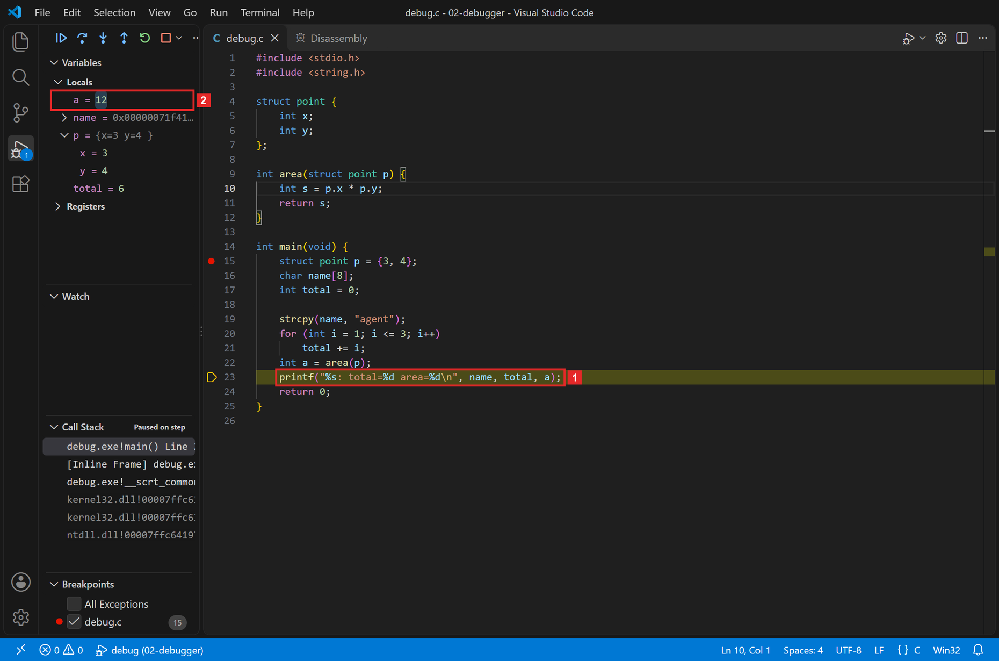
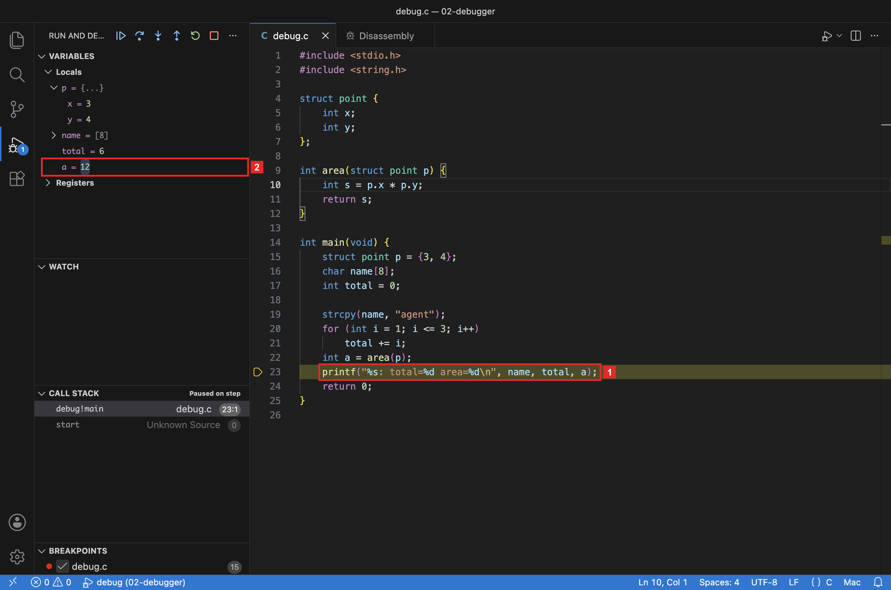
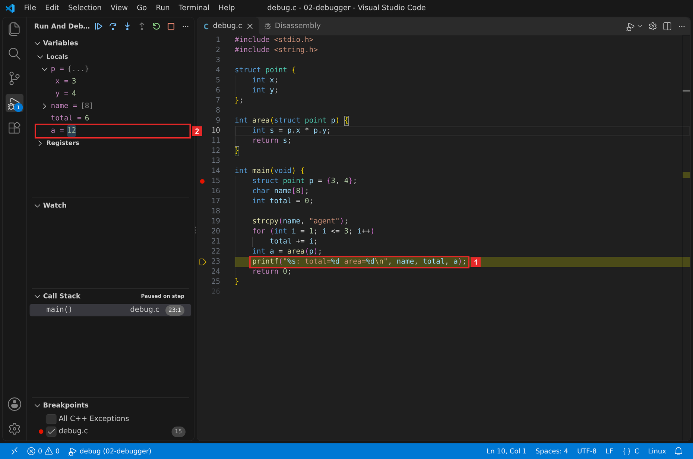
Что на кадре1 — стрелка у строки 23
printf. 2 —a = 12. Выше —total = 6иpс полями 3 и 4.Что изменилосьФункция
areaдоработала до конца и вернула 12, отладчик снова вmain. Шаг с обходом выполнил присваиваниеa = area(p), и вaвместо прежнего значения появился результат. В стеке снова одна строка —main.В отчёт. значения
aиtotalпередprintf. -
Доведите программу до концаНажмите F5 — Continue, продолжить. Откройте вкладку Terminal внизу и справа в списке терминалов выберите строку с путём к
debug.exe.Доведите программу до концаНажмите F5 — Continue, продолжить. Откройте вкладку Debug Console внизу.Доведите программу до концаНажмите F5 — Continue, продолжить. Откройте вкладку Terminal внизу и справа в списке терминалов выберите cppdbg: debug.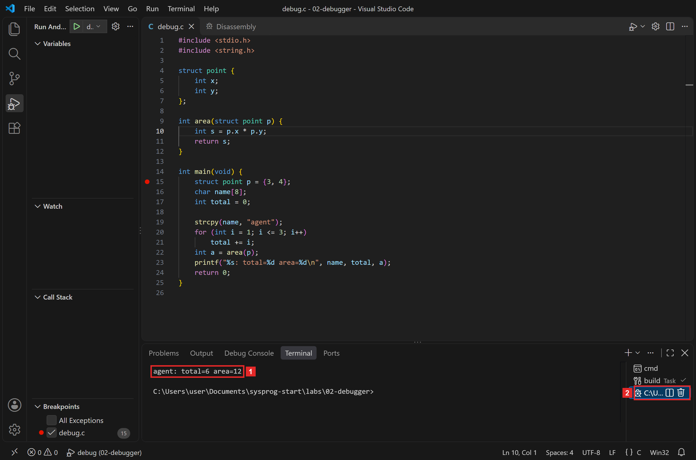
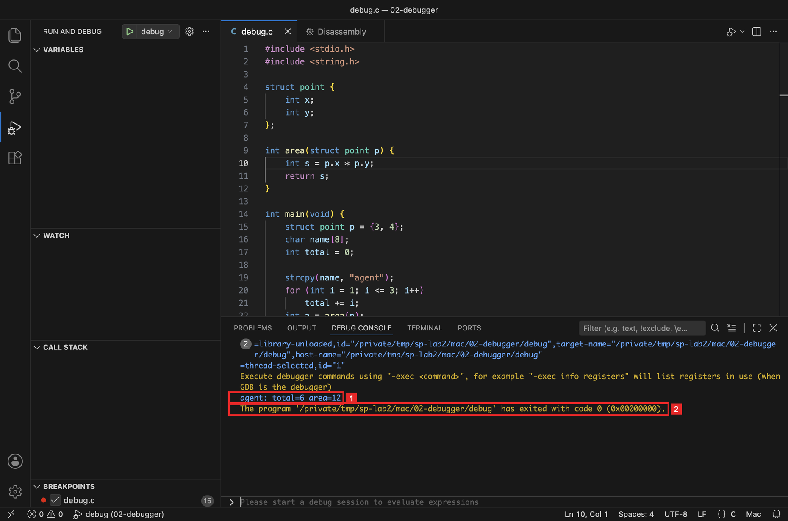
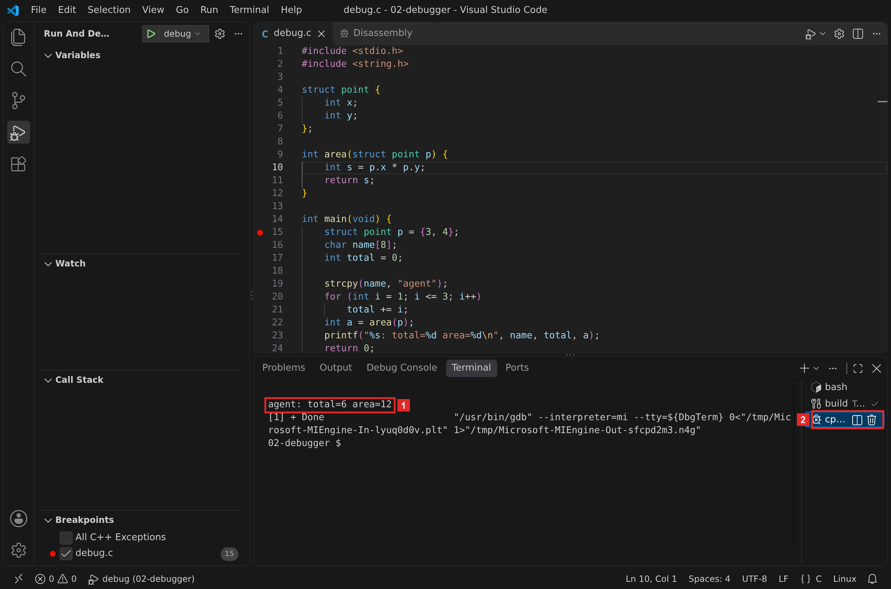
Что на кадре1 — вывод программы
agent: total=6 area=12. 2 — терминал программы в списке справа: он называется путём кdebug.exe. Выше — терминалcmdиз шага 1 и терминал задачиbuild.Что изменилосьПрограмма отработала без остановок до
return 0. Разделы Variables и Call Stack опустели: процесса больше нет. Сообщение о коде завершения — «The program … has exited with code 0» — появляется во вкладке Debug Console. Вывод тот же, что в шаге 1: отладчик не меняет работу программы.Что на кадреВкладка Debug Console — служебные сообщения отладчика. 1 — вывод программы
agent: total=6 area=12. 2 — «The program … has exited with code 0»: программа завершилась с кодом 0.Что изменилосьПрограмма отработала без остановок до
return 0. Разделы Variables и Call Stack опустели, панель отладки исчезла: процесса больше нет. Вывод тот же, что в шаге 1: отладчик не меняет работу программы, он только останавливает её и показывает память.Что на кадре1 — вывод программы
agent: total=6 area=12в терминале отладчика. Строка[1] + Done "/usr/bin/gdb" …под ним — оболочка сообщает, что отладчик GDB завершился. 2 — терминал cppdbg: debug в списке.Что изменилосьПрограмма отработала без остановок до
return 0. Разделы Variables и Call Stack опустели: процесса больше нет. В Linux программа под отладчиком пишет в отдельный терминал, а сообщение о коде завершения — «exited normally» — появляется во вкладке Debug Console. Вывод тот же, что в шаге 1: отладчик не меняет работу программы.В отчёт. что напечатала программа под отладчиком и с каким кодом завершилась.
Снимок в отчёт · 08 Сохраните окно как
screenshots/08_finished.png. На снимке должно быть видно: вывод программы под отладчиком и код завершения.
§5Что получилось
Программа под отладчиком выполнила те же команды, что и без него, и напечатала ту же строку. Разница в том, что между строками её можно было остановить и посмотреть память.
| Что увидели | Где в отладчике | Зачем это системному программисту |
|---|---|---|
| Случайные значения до присваивания | Variables, шаг 4 | Переменная без значения содержит старые байты. Ядро агента в главе 1.1 поэтому обнуляет структуру перед заполнением. |
| Строка — байты с нулём в конце | Variables, массив name, шаг 6 | Так же лежит имя компьютера в буфере ядра агента, глава 1.1, шаг 3. |
| Значение меняется по шагам | Watch, шаг 7 | Ошибку в цикле видно по тому, на каком проходе число стало не тем. |
| Кто кого вызвал | Call Stack, шаг 8 | При падении программы стек показывает функцию и строку, где это случилось. |
| Строка C — несколько команд процессора | Disassembly, шаг 9 | Так читают программы без исходного кода, ЛР 22. |
§6Отчёт
Создайте в labs/02-debugger файл report.md по образцу ниже и замените каждый пропуск ___ данными со своего экрана. Рядом должны лежать debug.c и папка .vscode. Собранную программу (debug, debug.exe, debug.dSYM, .pdb, .obj) в репозиторий не кладите. Коммит — labs 02: отладчик, отчёт.
# ЛР 2. Программа в отладчике Система: ___ · отладчик: ___ (LLDB, GDB или Visual Studio) ## Остановка и переменные Программа без отладчика напечатала: ___ Точка останова на строке ___. До строки 15: p.x = ___, p.y = ___, total = ___. После строки 15: p.x = ___, p.y = ___. Строку 16 отладчик пропустил, потому что ___. name[0] = ___ (код буквы), завершающий ноль в ячейке ___. ## Цикл и функция На кадре цикла: i = ___, total = ___; после следующего шага total = ___. В стеке внутри area строк: ___, сверху функция ___. Команда умножения в машинном коде: ___. Перед printf: a = ___, total = ___. Код завершения программы: ___. Не получилось: ___ ## Снимки экрана        
Кроме чисел в отчёт кладутся 8 снимков экрана. В папке labs/02-debugger/screenshots уже лежат заглушки с нужными именами, а в report.md — ссылки на них с подписями. Сделайте снимок окна после шага из таблицы и сохраните его поверх заглушки с тем же именем: подпись и ссылку менять не нужно, на GitHub отчёт сразу покажет ваш снимок. В каждом шаге такой снимок отмечен оранжевой строкой «Снимок в отчёт».
Как снять окно: Win+Shift+S → «Окно», затем сохранить из «Ножниц» как PNG⌘+⇧+4, затем Пробел и щелчок по окну — PNG появится на Рабочем столеPrtSc → «Окно», PNG сохраняется в папку «Изображения/Снимки экрана». Снимок — всё окно программы, без обрезки; имя файла — строго из таблицы.
| № | После шага | Файл | Что должно быть видно |
|---|---|---|---|
| 01 | 1 | 01_build_run.png | команда сборки и строка agent: total=6 area=12 |
| 02 | 3 | 02_breakpoint.png | красная точка у строки 15 и она же в списке Breakpoints |
| 03 | 4 | 03_paused.png | жёлтая стрелка у строки 15, переменные в Variables до присваивания |
| 04 | 6 | 04_array_name.png | раскрытый name: буквы agent и ноль в [5] |
| 05 | 7 | 05_watch_loop.png | i и total в разделе Watch на втором проходе цикла |
| 06 | 8 | 06_call_stack.png | стрелка в area, копия p в Variables, две строки в Call Stack |
| 07 | 9 | 07_disassembly.png | вкладка Disassembly с командой умножения |
| 08 | 11 | 08_finished.png | вывод программы под отладчиком и код завершения |
На защите программа запускается под отладчиком, и те же значения показываются на экране. Случайные числа шага 4 при каждом запуске могут быть другими — это ожидаемо.
§7Проверьте себя
Почему до выполнения строки 15 в p.x уже есть число?
Место под переменные функции выделяется сразу при входе в неё. Строка 15 только записывает в это место 3 и 4. До неё там лежат байты, которые остались от прошлой работы программы, — их отладчик и показывает.
Чем шаг с обходом отличается от шага с заходом?
На строке с вызовом функции шаг с обходом (F10) выполняет функцию целиком и встаёт на следующую строку. Шаг с заходом (F11) входит в функцию и встаёт на её первую строку. На строке без вызова они делают одно и то же.
Почему в area переменная p — копия, а не та же структура из main?
В C аргументы передаются по значению: функция получает копию. Чтобы функция могла менять структуру вызывающей программы, ей передают адрес — так устроена core_get_info в главе 1.1.
Зачем ключ -O0 или /Od при сборке для отладки?
С оптимизацией компилятор переставляет и выбрасывает команды, хранит переменные только в регистрах. Тогда отладчик прыгает между строками в неожиданном порядке и показывает «optimized out» вместо значений. Без оптимизации каждая строка — свои команды, в том же порядке.